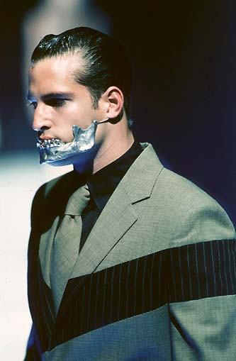
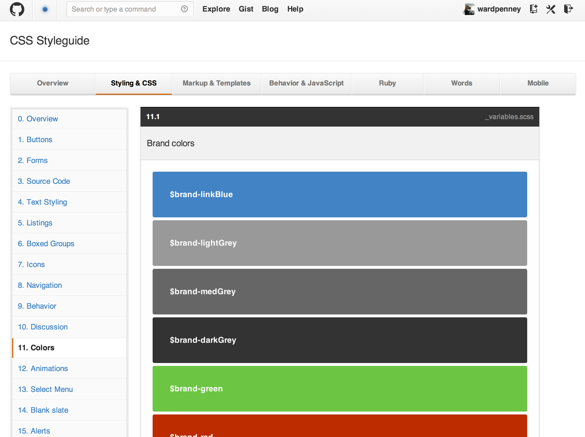

“IT’S ALIIIIIIVE!”
Frankenstein Grows Up
(using Living Style Guides)
Pivotal Labs, July 2013
What is style?
Style is consistentcy...

Style is recognizeability...
Even in its iterations...

A Style Guide
Is an inventory of standard style patterns

A Live Style Guide (LSG)
In a "Live" web page you can hit with a browser
How many of us have worked with one?
#FAILS
- It may lag behind the rest of the site and become obsolete
- New designs do not reference the LSG
- Maintenance sometimes feels redundant and unimportant
Zombie LSG's!
- It looks tattered
- It has no heartbeat

We Want Living Style Guides!
- Team members refer to elements in it by name
- An integral part of the product design process
So, what makes it living?
Let's look at a hypothetical situation
Welcome to uTrvl.com!
The #1 site for travel plans just for u!
LSG Happy Path
"FancyPantsAirlines has decided to partner on a Summer Beach Finder! Their API can let the user find air travel to the beaches on our lists. We're gonna share the cost on a 10% click-now coupon."
Let's use the Thin Sidebar Layout, with the Main Map loaded with most popular.
LSG Happy Path
How about the Coupon Interstitial after a 3-second delay, with Blurred Background to create incentive with the coupon?
Yeah that will looks good. Ok, so we just need a new list of styled Flight Times?
Looks like it. Let's story it up.
The Stories
- FeatureAny Pair
As a User, I see the Main Map in the Thin Sidebar Layout with Most Popular places. - FeatureAny Pair
As a User on the SBF, I see the Coupon Modal after 3 seconds, with the Blurred Background. - ChoreDesign + Dev
As a Dev in the LSG, I see a representation of the Flight Times List. - FeatureAny Pair
As a User on the SBF, I see Partner Flight Times List
What went right here?
- Tactful reuse of existing elements
- Widgets already first-class quality
- Widgets and layout already responsive
- Using terminology of widgets
- No team member bottlenecks
- No mocks for it (design / dev pair did it)
- No visual acceptance handoff snags (already done in pair)
The Living Style Guide represents a
change in process
Website Style is built by the team
Every memeber ends up implementing design
(and making design decisions)
The closer design gets
to engineering
the better
- More time is spent polishing, and less documenting
- Layout count and complexity decreases (no snowflakes)
- Designers don't pull late-nighters constantly
- Acceptance handoffs are smoother with less rejections and visual bugs
- Responsiveness from the start
- When combined, design and engineering talent create novel interactions
- Pairing disseminates design talent into team
The Requirements of an LSG
- It has to be a simple stack of HTML (HAML), CSS (SASS) and maybe Javascript
- It must include the EXACT same CSS from the main site
Action Items - New Project
Create Chores to start out with some basics. Look over the mocks (if available) and look for patterns
- Colors
- Typography
- Buttons
- Borders
- Rules
- Widgets
Action Items - Ongoing
- Make sure your designs attempt to reuse components (it's OK to make new things! just be aware of it!)
- Refactor and poish your elements as you implement them from the LSG. Make them strong!
- Use the terminology from the LSG within the team
- Use LSG-only chores where appropraite
Yes, LSG-only stories are chores
- It is a Chore. The Acceptance will happen when the features are implemented for the user.
- Required to eliminate acceptance handoff
- Amazingly fun for both the engineer and the designer
- Yes this is a thing. Often, the Product Owner will be signing off on designs implemented in browser. This is a great way to elmininate an early handoff.
- Product may also tri-pair near before a pair Finishes the story
When is a Story not just a Chore?
When it's implemented with the feature
- When a pair says "We can't do that, because it's blocked on the LSG Chore"
- STOP! Delete the chore and merge it into the feature story.
- Designer should can tri-pair when the feature story nears finish (before deliver)
- The LSG should have momentum, and the frontend codepase patterns set
We walk a fine line
- Ideas vs Implementation
- Straightforward vs Hacked
- Pattern vs Novel
Style Guide Tools
- Style GuidePivotal Style Guide Gem
- CSS Documentation to Style GuideKSS
- CSS Documentation to Style GuideStyle Docco
- KSS fork (looks better)Nadarei KSS
- anchoring-your-design-language-in-a-live-style-guide - Jim Lindstrom
- CSS Documentation to Style GuideKalei Style Guide
- Roll Your Own!
Use a Living Style Guide to:
- Give you time to polish
- Give you time to innovate
- Enable the team
Thank you!
Links
Images
- http://www.flickr.com/photos/synaes/5721938624
- http://www.flickr.com/photos/synaes/5721939248
- http://www.flickr.com/photos/blueyeda73/4111133224
- http://www.flickr.com/photos/shebalso/121839235
- http://www.flickr.com/photos/53558245@N02/4978362207
- http://www.flickr.com/photos/texmetz/3200472130/